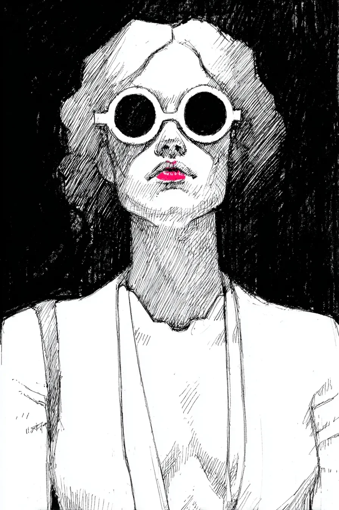

립스틱이 번졌는지 확인하고 싶었지만, 거울을 보는 순간 거울이 산산조각 났다.\
I wanted to check if my lipstick smeared, but the moment I looked, the mirror shattered into pieces.
선글라스가 내 눈을 가리고 있었는데도 말이다 - 아마 내 입술이 너무 강렬해서 유리가 견디지 못한 모양이다.\
Even though my sunglasses were covering my eyes - apparently my lips were too intense for the glass to withstand.
사실 이 선글라스는 나를 보호하는 게 아니라 거울들을 보호하려는 마지막 시도였다.\
Actually, these sunglasses aren't to protect me but were a last attempt to protect the mirrors.
내 목이 이렇게 길어진 건 깨진 거울 파편들 사이로 각도를 바꿔가며 내 얼굴을 보려던 몇 년간의 노력 때문이다.\
My neck became this long from years of craning at different angles to glimpse my face between shattered mirror fragments.
그래도 오늘은 립스틱 색이 손등에서 괜찮아 보였으니, 또 다른 거울을 희생시킬 준비가 됐다.\
Still, today's lipstick color looked fine on the back of my hand, so I'm ready to sacrifice another mirror.